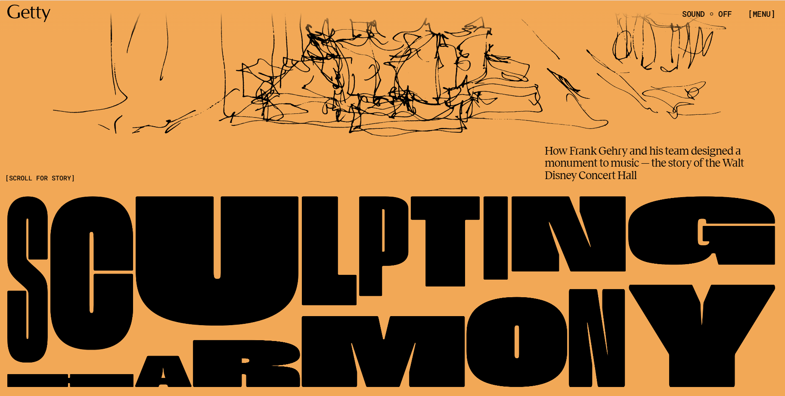
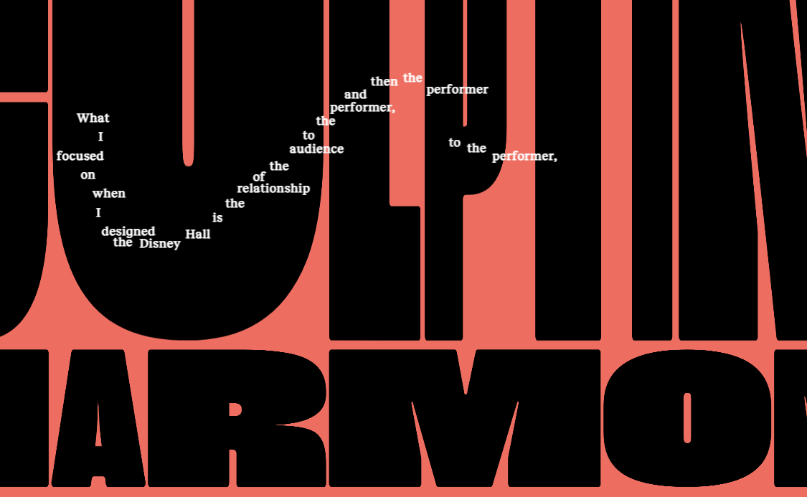

Initial Impressions
First Thing Noticed: The prominent use of vibrant orange and black creating huge contrast.
 >Actions while Browsing
- Scrolling down
- playing with the interaction
- Listening to the music
- Watching the embedded videos
Most Engaged Part
Enjoying the aesthetic experience of seeing well matched color, fonts, text size, and variation in format.
Most Common Action
Scrolling downwards. Then, I only noticed this fun interaction that allows user to draw out text when moving the mouse, but it needed to be clicked into to activate the interaction, which makes it difficult to notice at first glance.
Primary Goal
My impression of the intended primary goal of the interactive experience was to outline the history, elegance, and magnificence of the concert and the aesthetic intentionality it carries.
Communication of Primary Goal
The interactive experience includes heading text that jumps in and out as the user scrolls and embedded videos of first person perspective viewing the space via zooming camera in and out. These elements create a sense of immersion and instant feedback to users' actions. The classical music, delicately crafted font presentation, and limited use of color palette highlight the entire design's simplistic elegance and successfully communicate the designer's dedication. This also constitutes the most satisfying part of the interaction.
Interaction Over Time
My impression of how the experience should be interacted with over time is as a very short introductory website and a lot of time spent on appreciating the design. The visual This impression derives from the heavily visually based interactive experience which makes the experience fun but slightly difficult to concentrate on textual information, which communicates the design focus and forgoes other contextual information.
Other Media Forms Referenced
The experience references handdrawn illustration, video and music.
Impression of Engagement
Embedding videos, music, and illustrations makes the web browsing experience fun and worthwhile, making me feel a sense of richness and aesthetic stimulation.
Frustrating Part
The most frustrating part of the interaction is that the headings on each page are arranged to appear in a way that makes it hard to read at first glance, and the text is not outlined to maximize readability like journal articles. However, with visually pleasing design, some contextual information needed to be forgone.